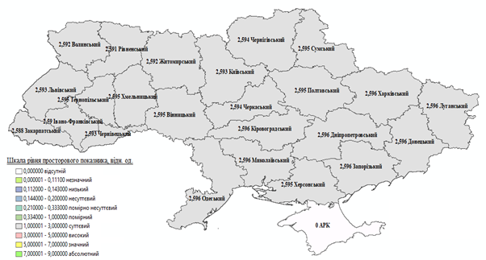
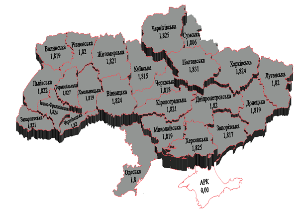

The concept of intelligent geospatial economy
Currently, under the conditions of increasing crisis phenomena, the negative impact of external and internal factors, the pandemic COVID - 19, stagnation processes that are observed in the economy, the application of modern tools and approaches that ensure its development is of particular importance. The development and implementation of information systems and technologies, tools of intelligent geospatial economy as a new direction, which is based on the provisions and approaches of the theory of economic development, the use of technologies of intelligence formation and tools of information and geoinformation systems is of particular importance in this context.
Problematic phenomena, which are manifested in many economies of states, form the need to rethink approaches to
the management of economic processes at different levels, especially providing a distance form with
the use of information and geospatial systems. Synthesis of modern methods, models, systems allows
to create an intelligent geospatial economy . In addition, for the last years the development
of Internet technologies and digital economy, intelligent and geospatial systems indicates the need
for formation and implementation of intelligent geospatial economy (intelectgeospates) at different levels.
To the begining...
The concept is based on a theoretical and methodological platform regarding the definition of intelligent
geospatial economy as a system that includes intellectual, information, geospatial, economic and security
elements which are aimed at providing distance management of the formation and using all types of resources
at the state, regional, local and other levels with consideration of the interaction of stakeholders,
the influence of external and internal factors, which forms a digital economic environment.
To the begining...
The characteristic of the elements of an intelligent geospatial economy:
intellectual: intelligence development systems are formed and used to act as the "engine" and " brain center " for determining the quantitative and qualitative economic parameters at various levels (state, regional, local, etc.).
The tools for forming and using an intelligence development system consist of:
- methods;
- models;
- parameters;
The economic indicators are evaluated at the intellectual level, their forecasting is carried out, directions for improving the efficiency of formation and use of all types of resources and interaction of stakeholders are determined, the development of strategic contours of economic systems at various levels;
geospatial: geospatial analysis of economic processes with the use of geographic information systems and technologies is carried out, which allows to determine the directions and features of the use of all types of resources with consideration of spatial particularities of territories and the level of stakeholder interaction.
The tools that are used to form the geospatial level:
- geofactor analysis;
- geoinformation systems;
- geoinformation technologies;
- Web geoinformation systems.
the economic: forming a quantitative basis of economic processes through the development and use of analytical and diagnostic system of indicators with consideration of the peculiarities of information and analytical and regulatory support, interaction of stakeholders.
The tools are used to form the economic level:
- economic analysis;
- financial analysis;
- strategic analysis;
- economic and mathematical modeling;
- neural analysis;
- diagnostic-analytical system;
- integral method;
- regulatory and legal support;
- information and analytical support.
The analytical-diagnostic system of indicators is developed at the economic level. (fig. 1.1).

Fig. 1.1 - Analytical and diagnostic system of indicators in the intelligent geospatial economy
The local levels are determined with the use of expert and quantitative methods of assessment, with consideration of the level of economy, regulatory and legal support, directions and peculiarities of interaction with stakeholders. Local indicators are formed on input indicators, which are determined on the basis of regulatory or existing information-analytical support, analytical methods or methods of expert analysis.
Diagnosis of the results of the evaluation of local indicators is carried out on the basis of the developed values of scales of indicators which are set by their normative values. Scales are developed, then normative values are set for each local indicator.
The generalizing level is evaluated by generalizing indicators, which are grouped on the basis of local indicators, depending on the directions and characteristics of economic relations, territorial development, geospatial support, environmental and investment policy, etc. The generalizing level uses generalizing models and coefficients of importance of each indicator. The diagnosis of the results evaluation of generalizable indicators is based on the developed scale and established normative values.
The integral indicator of geospatial economic system development is determined at the integral level, using the integral model and generalizing indicators. The disproportions in the system are identified on the basis of the values of the integral indicator, the direction of strategic development is developed;
security: it is aimed at the formation and use of information security system, which allows to carry out information, financial and economic, corporate, stakeholder, power security.
This element is developed and implemented via the use of tools:
- the methods and models of information security;
- the tools of financial and economic security;
- the methods and models of corporate and power security;
- the security of stakeholders' interaction.
The security element is formed from several levels, which allows for multi-level control and safety.
The general scheme of intelligent geospatial economy formation is shown in Fig. 1.2.
Fig. 1.2 - The general scheme of formation of the intelligent geospatial economy
The geospatial component is formed and implemented on the basis of the algorithm of development and operation of geodatabases of intelligent geospatial economy indicators:
Fig. 1.3 - The algorithm of development and operation of geodatabases of intelligent geospatial economy indicators
The algorithm of development the spatial information for modeling and data analysis of intelligent geospatial economy indicators is presented as a set of interrelated operations from the development and preparation of geodatabases of indicators in the software environment GIS.
The system of geoinformation support of intelligent geospatial economy indicators with input, local, summarizing and integral data is implemented following components::
- The application of software for the development of a geoinformation system.
- The use of a geodatabase of intelligent geospatial economy indicators for the creation of a set of geographic information system layers.
- The analysis of generalizing integral indicators of the intelligent geospatial economy with territorial and legislative characteristics.
- The choice of technology for evaluating the integral indicators of the intelligent geospatial economy.
- The application of GIS software module of GIS and technology of mathematical modeling of indicators of territorial development of intelligent geospatial economy.
- The creation of process models and analysis of intelligent geospatial economy indicators.
- The development of a set layers of generalizing indicators.
- The analysis and development of a layer the integral indicators of the intelligent geospatial economy.
- The application of the scale influence data modeling indicators of the intelligent geospatial economy.
- The visualization of data, representing a geographic information system of intelligent geospatial economy.
The algorithm of intelligent geospatial economy GIS implementation is presented in Fig. 1.4.

Fig. 1.4 - The algorithm of implementation the GIS for the intelligent geospatial economy
The examples of the use of GIS for the intelligent geospatial economy at the regional level are shown in Figures 1.5 - 1.11.

Fig. 1.5 - The geoinformation map of generalizing spatial indicators of territorial development of land use of regions in the intelligent geospatial economy system
Fig. 1.6 - The geoinformation map of generalized urban development indicators of territorial development of land use of regions in in the intelligent geospatial economy system

Fig. 1.7 - The geoinformation map of generalized investment indicators of territorial development of land use of regions in the intelligent geospatial economy system

Fig. 1.8 - The geoinformation map of generalized environmental indicators of territorial development of regional land use in the intelligent geospatial economy system

Fig. 1.9 - The geoinformation map of integral indicators the territorial development of regional land use in the intelligent geospatial economy system

Fig. 1.10 - The Geoinformation 3-D model for monitoring the condition of territorial development of regional land use in the Intelligent geospatial economy system

Fig. 1.11 - The Geoinformation 3-D Model for Monitoring the condition and the forecast tendencies of the territorial development of the regions land use in the intelligent geospatial economy system
Land surveying documentation, maps M:500, 1000, 2000, 5000, data on spatial, economic, investment, environmental, urban planning, marine indicators are the information basis for the formation of the geospatial component;
information: the information platform of the intelligent geospatial economic system is formed, which is its "shell" and connects the elements into the whole.
The general scheme of technology for the development of the information layer of the intelligent geospatial Economic system is presented in Fig. 1.12.
The main stages are implemented from the general scheme of technology for the development of the information level of intelligent geospatial economic system:
- determination of the system of factors of geospatial economic system formation on the basis of information-analytical and normative-legal support depending on the level of problem solving (state, region, city, other territorial associations or economic entities);
- formation of multilevel analytical-diagnostic system of indicators of formation of geospatial economic system on the basis of a certain system of factors, where are developed three levels: local, generalizing and integral. Each level corresponds to the indicators that form a hierarchical system;
- developing a methodological approach to the integral assessment of geospatial economic system indicators, which includes a set of interrelated stages (Fig. 1.13);
- evaluation of the integral indicator of geospatial economic system development is carried out on the basis of the methodological approach. At the same time methods and models of assessment are developed and used in the economic block in accordance with the indicators defined in the diagnostic-analytical system;
- building a geospatial economic system with the use of geoinformation and information technologies, information security technologies. In addition, there is software for the use of the data obtained in the information system, the formation of databases.
Fig. 1.12 - The general scheme of technology for the development of the information layer of the intelligent geospatial economic system data, their forecasting, development of artificial intelligence, geoinformation systems, systems of information security;
Fig. 1.13 - The development of a methodological approach to the integral evaluation of the geospatial economic system indicators.
To the begining...
Measures to improve the efficiency, effectiveness and ensure the development of the system are based on the use of the presented technology.
The tools used to develop the information component include: software (C++, Python), artificial intelligence and information security software.
The instrumental-information model is developed to implement the information component of the geospatial economic system.
The instrumental-information model is used in the economic relations to determine the level of geospatial development at different levels of the economy (state, regional, other territorial associations, enterprises), its forecasting and ensuring the increase in modern conditions of development and functioning of economic entities and stakeholders' interaction.
The set goal is achieved through the development and application of hardware and information model to determine the level of geoprostatic development at different levels of economic relations based on a set of technical procedures and technology, taking into account the interaction of information, geoprostatic, economic, intellectual and security components, taking into account the characteristics and directions of stakeholder interaction.
The results of the applications of the instrumental-information model: allows you to build an information system of intelligent geospatial economy at its various levels, implemented with the use of special information and calculation and geopostationary complexes and is stored on the information media and information environment.
The basis of the useful instrumental-information model is the task - the development of technology to determine the level of development of intelligent geospatial economy at its various levels through the use of a set of interconnected information modules and hardware complexes. The presented instrumental-informational model allows to form an information base on the level of development of the intelligent geospatial economy at its various levels for decision-making and growth of the effectiveness of the main directions, taking into account the peculiarities of interaction between the stakeholders. The instrumental-informational molecule allows remote management of economic relations, all kinds of resources at different levels.
The instrumental-informational model for determining the level of development of the intelligent geospatial economy the intelligent geospatial economy at its different levels includes the following modules and blocks (Fig. 1.14):
- The input module of the collection of information about the factors that form the information support of the level of development of the intelligent geospatial economy at the appropriate level (М1).
- The instrument module of holding information about the factors of the level of development of the intelligent geospatial economy at the appropriate level on the information media (М2).
- The instrumental block of factor selection according to certain criteria (Б1).
- The information module of the construction of a multilevel system of factors that form the information support of the level of development of the intelligent geospatial economy at the appropriate level М3).
- The instrumental unit of formation of a hierarchical multilevel system of factors (B2) using the method of classification of hierarchies and determining the ability to respond to changes occurring in the system and artificial intelligence technologies.
- The instrumental module for storing information about the multilevel system on information carriers (М4).
- The complex of presented modules and blocks form the first level of hardware-information model and information security system (Р1).
- The instrumental module of transition from factors to indicators based on quasi-metric models (М5).
- The information module of the formation of a multi-level analytical and diagnostic system of indicators of the level of development of intelligent geospatial economy at the appropriate level (М6).
- Instrumental unit for determining the indicators of the level of development of the intelligent geospatial economy at the appropriate level by certain methods and models at the third level of the system (B3) using artificial intelligence technologies.
- Instrumental unit for determining the indicators of the level of development of the intelligent geospatial economy at the appropriate level by certain methods and models at the second level of the system (B4) with the use of artificial intelligence technologies.
- Instrumental unit for determining the indicators of the level of development of the intelligent geospatial economy at the appropriate level by certain methods and models at the second level of the system (B5) with the use of artificial intelligence technologies.
- Instrumental module for storing information on certain indicators of the multilevel diagnostic and analytical system on information carriers(M7).
- Instrumental unit for determining the integral indicator of the level of development of the intelligent geospatial economy at the appropriate level using appropriate methods and models and artificial intelligence technologies (B6).
- Instrumental module for storing information on a certain integral indicator of a multilevel diagnostic and analytical system on information carriers (M8).
- The set of presented modules and blocks form the second level of the instrumental information model and information security system (Р22).
- Instrumental module of refusal to implement design solutions for the development of the intelligent geospatial economy at the appropriate levels (M9) using artificial intelligence technology and the constructed scale of indicators.
- Information module of making project decisions on the integral indicator and the constructed scale (M10) using artificial intelligence technology and the constructed scale of indicators.
- Instrumental module of the implementation of project decisions on the development of intelligent geospatial economy at the appropriate levels (M11) using artificial intelligence technology.
- The complex of the presented modules and blocks form the third level of the instrumental-information model and information security system (Р3).
- Instrumental block of forecasting the integral indicator of the level of development of the intelligent geospatial economy at the appropriate level with the use of appropriate methods and models and artificial intelligence technology (B7).
- Instrumental module for storing information on the predicted integral indicator of the multilevel diagnostic and analytical system on information carriers (M12).
- Instrumental module of the implementation of design solutions for the development of intelligent geospatial economy at the appropriate levels on the predicted values (M13) with the use of artificial intelligence technology.
- The complex of the presented modules and blocks form the fourth level of the instrumental-information model and information security system (P4).
- Instrumental module of the construction of geoinformation maps of incoming and local indicators of the development of intelligent geospatial economy at appropriate levels (M14) with the use of geoinformation systems and technologies.
- Instrumental module of the construction of geoinformation maps of generalized indicators of the development of the intellectual geospatial economy at appropriate levels (M15) with the use of geoinformation systems and technologies.
- Instrumental module of the construction of geoinformation maps of the integral indicator of the level of development of the intellectual geospatial economy at appropriate levels (M16) with the use of geoinformation systems and technologies.
- Апаратний модуль побудованим 3-D геоінформаційних моніторингових карт прогнозного інтегрального показника рівня розвитку інтелектуальної геопросторової економіки на відповідних рівнях (M17) з використанням геоінформаційних систем і технологій.
- Апаратний модуль зберігання інформації по геоінформаційному забезпечення інтелектуальної геопросторової економіки (M18).
- Апаратний модуль реалізації стратегічних проектних рішень щодо розвитку інтелектуальної геопросторової економіки на відповідних рівнях з урахуванням просторового забезпечення (M19) з використанням технології штучного інтелекту.
- The set of presented modules and blocks form the fifth level of instrumental information model and information security system (P5).

Fig. 1.14 -The Instrumental-informational model of the level of development of the intelligent geospatial economy at the appropriate level
The instrumental-information model of the level of development of the intelligent geospatial economy at the appropriate level is implemented as follows:
- The system of factors influencing the level of development of intelligent geospatial economy at the appropriate level (M3) is formed based on the collection of information about the factors (M1), taking into account economic, technological, stakeholder, spatial, investment, urban planning, environmental and other features, land features through instrumental means of information storage (M2) and the selection of factors (B1). Artificial intelligence technology is used for factor selection. The multi-level system of factors (B2), including three levels of factors, is formed on the basis of the established system. If the multilevel system of factors according to the established criteria is built, then the saving of information by instrumental means is carried out (M4). If "No", then again we return to updating the information about the factors of the level of development of intelligent geospatial economy, their compliance with modern conditions. Presented group of modules and blocks form the first level of hardware-information model of the level of development of the intelligent geospatial economy at a certain level, information protection from external and internal influence is built (Р1).
- Transition from the first level of the model to another is carried out through the hardware module of transformation of factors with indicators based on quasi-metric models (M5). The information module of the formation of a multi-level system of indicators of the level of development of the intelligent geospatial economy at a certain level (M6), which determines the corresponding indicators at the third (B3), second (B4), first (B5) levels of the system and with the use of artificial intelligence technology was built on the basis of the transition. The results of the evaluation of indicators are stored on the instrumental unit (information carriers) of the information storage module (M7). Then the integral indicator of the level of development of the intelligent geospatial economy at a certain level is determined in the instrumental block behind the appropriate methods and models (B64), the results of which are stored on the information carriers in the instrumental block (M8). It should be noted determined on the previous block the integral indicator on the constructed scale of compliance is automatically checked the level of compliance on making and implementing decisions on the level of development of the intellectual geospatial economy at the appropriate level. If the integral index is greater than or equal to 5 (I ³ 5), then the transition to the third level of the instrumental-informational model for determining the investment attractiveness of the region's lands is carried out. If "No", then on the third level of the model the instrumental module of refusal to implement design solutions to ensure the development of the intelligent geospatial economy (M9) is implemented. In this case artificial intelligence technology, economic methods and models are used, information security system of the second level (P2) is formed.
- At the third level (P3) of the model the information module of making project decisions on the integral indicator and the constructed scale (M10) is implemented and the transition to the instrumental module of implementation of project decisions to ensure the development of the intelligent geospatial economy (M11) is carried out. The third level and security system is formed. Formation and decision-making is based on the use of artificial intelligence technology.
- At the fourth level (P4) the forecasting of the integral indicator of the level of development of the intelligent geospatial economy at the appropriate level with the use of appropriate mathematical methods and models, neural modeling and artificial intelligence technology (B7) is carried out. The obtained results are stored on information media (M12). On the basis of the obtained values the implementation of design solutions for the development of intelligent geospatial economy at the appropriate levels (M13) with the use of artificial intelligence technology is carried out. Strategic contours and directions of economic development are formed. The construction of the information security system is carried out.
- At the fifth level (P4) the construction of geoinformation maps on the indicators of the development of the intelligent geospatial economy at the appropriate levels (M14), (M15), (M16) with the use of geoinformation systems and technologies is carried out. The construction of 3-D geoinformation monitoring maps of the forecast integral indicator of the level of development of the intelligent geospatial economy at the relevant levels (M17) is carried out. The presented information is stored on information carriers (M18). Considering the spatial support the implementation of strategic project decisions on the development of the intelligent geospatial economy at the appropriate levels (M19) using artificial intelligence technology is carried out.
In this way, the instrumental-information model of the level of development of the intelligent geospatial economy at the appropriate level reflects the system information support of economic processes and relations to increase their efficiency, formation and use at the appropriate levels of complex information, geoinformation, technical means, mathematical methods and models, economic tools, artificial intelligence technology.
The instrumental-information model provides completeness and validity of decision-making by stakeholder groups at different stages of development and implementation of economic processes, remoteness, controllability of all types of resources and assets, reduction of costs of formation and use of personnel, ensuring full control in the management system of economic processes and relations. Based on the instrumental-information model of the level of development of the intelligent geospatial economy is formed digital economy for different levels using a set of modern intelligent, information, geoinformation technologies and mathematical system.
To the begining...
The instumental-information model to determine the level of development of the intelligent geospatial economy at the appropriate level forms the system environment of information support for the development of the intelligent geospatial economy, ensures the implementation of projects and project decisions with the application of certain blocks and modules, taking into account the spatial features and level of stakeholder interaction. Technologically the instrumental-information model includes information, geoinformation and technical means of formation, preservation of information, its processing and special means of determining the level of development of the intelligent geospatial economy at the appropriate level.
The instrumental-informative model of the level of development of the intelligent geospatial economy at the appropriate level is distinguished by the fact that the information diagnostic-analytical system of indicators is built, which allows to automate the determination of the level of development of the intelligent geospatial economy, making project decisions, it provides remote management of all types of resources and assets, the completeness and reliability of the information obtained, using modern technology and artificial intelligence with consideration of the influence of factors, spatial particularities and stakeholder relations. The instrumental-informational model of the level of development of the intelligent geospatial economy forms the digital economy at the appropriate level.
To the begining...